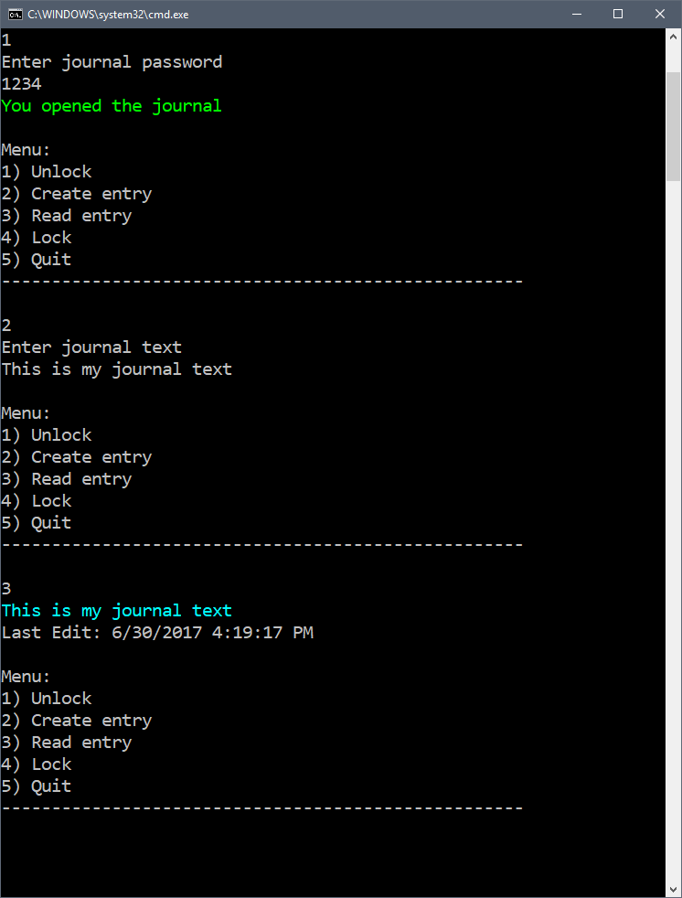

Duration
25 minutes
Lab goals
In this exercise, you will complete the journal application by creating methods inside the Journal
class to lock and unlock. You will then finish the console menu system by invoking the
correct methods on the journal. To complete the exercise, you will perform the following steps:
- Create a lock and unlock method in the
Journalclass. - Write the logic for all of the menu options in the
Mainmethod. - Spice up the application by adding some console color.
When you are finished, your application will look like:
Steps
Try to use the picture and above steps to complete the lab exercise, referring to the slides if you need any help in creating the journal application. You can also use the following step-by-step instructions to fill in any knowledge gaps.
Create lock and unlock methods
-
The
Journalis designed to be locked and unlocked so lets start with creating methods to do both. Open Journal.cs and create a method calledUnlockJournal. The method should return abooland accept astringparameter. Use the return type to indicate if theJournalwas succesfully unlocked, and the parameter will be the attempted password.Hint: Use the
journalUnlockedfield to unlock the journal. -
Next, we're going to create a method called
LockJournal. This method should returnvoidand have no parameters.
Implement console menu logic
Now that the Journal class is complete we're going to finish implementing the console menu.
-
Navigate to Program.cs and find the
switchstatement inside theMainmethod. -
Let's begin with implementing the unlock feature. If you've been following the exercises
this will be
case 1in the switch statement. In order to unlock the journal we need a password, so lets begin with prompting the user to enter a password. -
Now that we have the password, lets pass it into the
UnlockJournalmethod and display either a success or failure message.Hint:
UnlockJournalreturns a bool. Use it to figure out if the password was correct or incorrect. -
Next, lets implement the "Create entry" option. Remember our journal only supports
one journal entry, which is exposed through the
Entryproperty. Before we can store the entry we first have to check to see if the journal is locked. If the journal is locked, display an error message. If the journal is unlocked, prompt the user to enter the journal entry text.Hint:
Entrywill benullif the journal is locked. - Now that we have the entry text lets store it inside of our journal.
-
Next, lets implement the "Read entry" option. Once again we only want the user
to be able to read the journal if its unlocked. If the journal is unlocked, print the
text to the console. You should also print the last edit date and time.
Hint: You can use the
ToShortDateStringandToLongTimeStringmethods to get a string form of the date and time. -
Finally, lets implement the lock feature. call the
LockJournalmethod.
Add some console color
The core application is complete but now lets spice up the application with some color.
-
Before you print any negative message change the console color to red. For example,
if the user types the wrong password, display the error message in red. To change the console color,
use the
ForegroundColorproperty. - Go through the application code and add color to where you see fit.
-
Everytime you change the console color, it doesn't reset. Lets reset the console color
after every command. Go to the end of the
switchstatement and call theResetColormethod on the console. - At this point the application is complete, run it and see the results.
Summary
In this lab exercise, you finished building the journal application by creating methods and invoking them inside of our console menu.